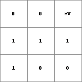
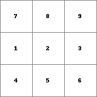
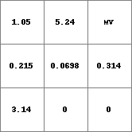
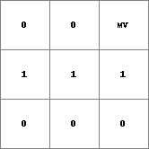

markwhilesumle,markwhilesumge
Marks each cell in specified order until the sum reaches a specified limit.
Result = markwhilesumle(expression1, expression2, limit)
Result = markwhilesumge(expression1, expression2, limit)
Each cell of expression2 is summed in the order specified by the ascending ordinal values in expression1 while the sum of the cells in expression2 is less or equal than limit for markwhilesumle, or greater or equal than limit for markwhilesumge. Result is a boolean map where every cell that matches the condition is marked 1 (True) or 0 (False) otherwise.
Missing values in expression1 or expression2 will return missing values in Result. expression1 should have an ascending order with no multiple instances of the same number.
| Result2.map | Expr1.map | Expr.map |
|  |  |  |
| Result1.map | Expr1.map | Expr.map |
|  |